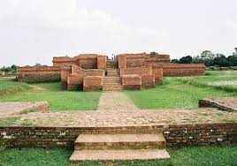

Cox's Bazaar is a city, fishing port, tourism centre, and district headquarters in south eastern Bangladesh. It is located 150 km (93 miles) south of the city of Chittagong. Cox's Bazar is also known by the name Panowa, which translates literally as "yellow flower". Another old name was "Palongkee". The city has the longest uninterrupted natural beach in the world.
The modern Cox's Bazar derives its name from Captain Hiram Cox, an officer of the British East India Company, a Superintendent of Palongkee outpost. To commemorate his role in refugee rehabilitation work, a market was established and named after him.
The city covers an area of 23.4 km2 (9.0 sq mi) with 27 mahallas and 9 wards and as of 2011 had a population of 265,500. Cox's Bazar is connected by road and air with Chittagong.
Dhaka, formerly known as Dacca, is the capital and largest city of Bangladesh, as well as the world's largest Bengali-speaking city. It is the eighth largest and sixth most densely populated city in the world with a population of 8.9 million residents as of 2011, and a population of over 21.7 million residents in the Greater Dhaka Area. According to a Demographia survey, Dhaka has the most densely populated built-up urban area in the world, and is popularly described as such in the news media. Dhaka is one of the major cities of South Asia and a major global Muslim-majority city. As part of the Bengal delta, the city is bounded by the Buriganga River, Turag River, Dhaleshwari River and Shitalakshya River.
The area of Dhaka has been inhabited since the first millennium. An early modern city developed from the 17th century as a provincial capital and commercial centre of the Mughal Empire. Dhaka was the capital of a proto-industrialised Mughal Bengal for 75 years (1608–39 and 1660–1704). It was the hub of the muslin trade in Bengal and one of the most prosperous cities in the world. The Mughal city was named Jahangirnagar (City of Jahangir) in honour of the erstwhile ruling emperor Jahangir. It hosted the seat of the Mughal Subahdar, Naib Nazims, Dhaka Nawabs, and Dewans. The pre-colonial city's glory peaked in the 17th and 18th centuries when it was home to merchants from across Eurasia. The Port of Dhaka was a major trading post for both riverine and seaborne trade. The Mughals decorated the city with well-laid gardens, tombs, mosques, palaces and forts. The city was once called the Venice of the East. Under British rule, the city saw the introduction of electricity, railways, cinemas, Western-style universities and colleges and a modern water supply. It became an important administrative and educational centre in the British Raj, as the capital of Eastern Bengal and Assam province after 1905. In 1947, after the end of British rule, the city became the administrative capital of East Pakistan. It was declared the legislative capital of Pakistan in 1962. In 1971, after the Liberation War, it became the capital of independent Bangladesh.
A beta-global city, Dhaka is the center of political, economic and culture life in Bangladesh. It is the seat of the Government of Bangladesh, many Bangladeshi companies and leading Bangladeshi educational, scientific, research and cultural organizations. Since its establishment as a modern capital city; the population, area and social and economic diversity of Dhaka have grown tremendously. The city is now one of the most densely industrialized regions in the country. The city accounts for 35% of Bangladesh's economy. The Dhaka Stock Exchange has over 750 listed companies. Dhaka hosts over 50 diplomatic missions as well as the headquarters of BIMSTEC and CIRDAP. The city's culture is known for its rickshaws, cuisine, art festivals and religious diversity. The old city is home to around 2000 buildings from the Mughal and British periods
#3 Rajshahi
Rajshahi is a metropolitan city and a major urban, commercial and educational centre of Bangladesh. It is known for it's delicious mangoes. It is also the administrative seat of the eponymous division and district. Located on the north bank of the Padma River, near the Bangladesh-India border, the city has a population of over 763,580 residents. The town is surrounded by the satellite towns of Nowhata and Katakhali, which together build an urban agglomeration of about 1 million population. Modern Rajshahi lies in the ancient region of Pundravardhana. The foundation of the city dates to 1634, according to epigraphic records at the mausoleum of Sufi saint Shah Makhdum. The area hosted a Dutch settlement in the 18th century. The Rajshahi municipality was constituted during the British Raj in 1876. It was a divisional capital of the Bengal Presidency.
Rajshahi is a significant administrative, educational, cultural, and business centre in Bangladesh. It is a historic center of silk production. Varendra Research Museum, the oldest of its kind in Bangladesh, is located in the city. The city is home to many renowned educational institutions of Bangladesh. The head office of Rajshahi Agricultural Development Bank and Barind Multipurpose Development Authority (BMDA) is situated in the city. The Shah Makhdum Airport serves Rajshahi.
#4 Teknaf
Teknaf is an upazila of Cox's Bazar District in the Division of Chittagong, Bangladesh. It forms the southernmost point in mainland Bangladesh (St. Martin's Island is the southernmost point). The name of the region comes from the Naf River which forms the Eastern boundary of the upazila. It shares a border with Myanmar.
#5 Cumilla
Comilla , officially spelled Cumilla, is the 5th largest city in the Chittagong Division of Bangladesh. It is the administrative centre of the Comilla District. The name Comilla was derived from Komolangko , meaning the pond of lotus.The climate of Comilla is generally marked with monsoons, high temperature, considerable humidity, and heavy rainfall. The hot season commences early in April and continues till July. The average annual temperature in Comilla is 25.5 °C (77.9 °F).Comilla has a number of tourist attractions. Various archaeological relics discovered in the district, especially from the 7th–8th century, are now preserved in the Mainamati Museum. There is a World War II war cemetery in Comilla, which is protected and maintained by the Commonwealth War Graves Commission.Comilla Victorians is a professional cricket team based in Comilla and is the most successful club in the Bangladesh Premier League.

#6 Rangamati
Rangamati is the administrative headquarters of Rangamati Hill District in the Chittagong Hill Tracts of Bangladesh. The town is located at 22°37'60N 92°12'0E and has an altitude of 14 metres (46 ft).[1] The district is administered by an office named as District Administration, Rangamati. From Chittagong a 77 kilometres (48 mi) road leads to Rangamati. The township is located on the western bank of the Kaptai lake. Rangamati is a holiday destination because of its landscape, scenic beauty, lake, indigenous groups (Chakma, Marma, Tripuri, Tanchangya Pangkhua etc.), flora and fauna, indigenous museum, hanging bridge etc. Rangamati is surrounded by natural features like as mountains, rivers, lakes, and waterfalls. Rangamati is also home to several ethnic groups.